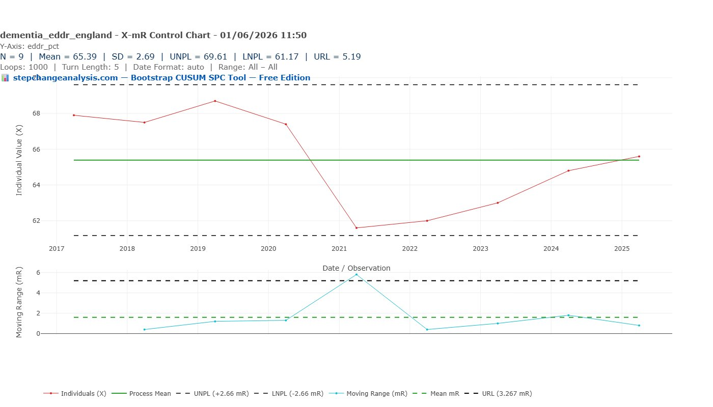
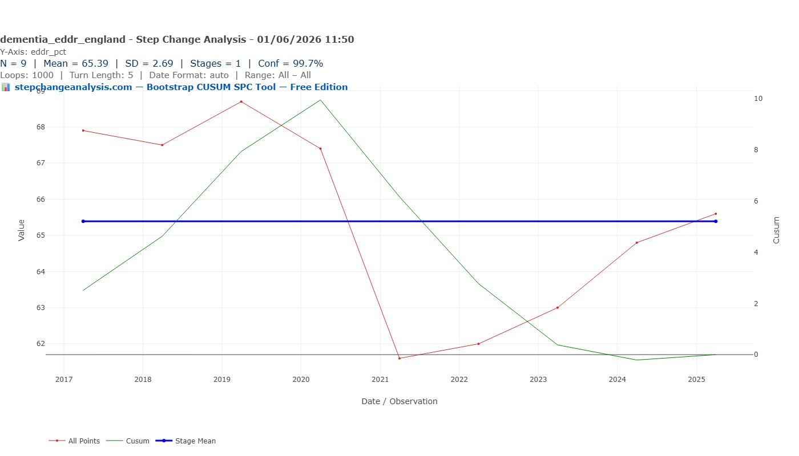
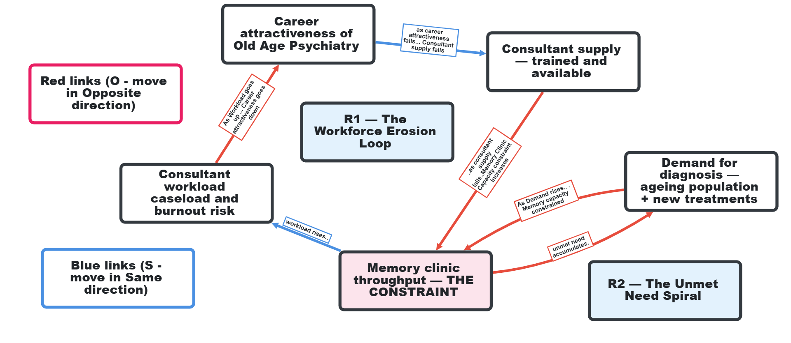

The 66% Target: What the Dementia Diagnosis Data Actually Shows
England first hit the dementia diagnosis target in November 2015. By 2019 it was exceeding it. Then COVID produced the largest single-year fall in the series — visible in both the Bootstrap CUSUM and the X-mR moving range chart. By March 2025, England is still 1.1 percentage points below a target set in 2012.
Same Data, Three Charts, Three Very Different Stories explains what the green CUSUM line means and why it detects structural change that other charts miss — including a step-by-step guide to reading the chart. Takes 5 minutes and makes every chart in this article easier to read.
Read above first 📚 Glossary — EDDR, CUSUM, Deming and moreTable of contents — click to expand or collapse
The target and the story behind it
In February 2012, Prime Minister David Cameron launched the first Dementia Challenge. The centrepiece commitment was a diagnosis rate target: two-thirds of all people estimated to be living with dementia should have a formal recorded diagnosis. Translated into a number, that became 66.7%.
The reasoning was that a diagnosis enables access to support, care planning, medication review, and post-diagnostic services. Without a diagnosis, a person with dementia and their family cannot access the system. The PM’s Challenge identified the diagnosis rate as the lever closest to the beginning of the care pathway.
Cameron’s motivation was personal as well as political. His mother was subsequently diagnosed with Alzheimer’s disease, and he has spoken publicly of the “period of darkness” she has experienced. In a 2017 article he described the moment that crystallised his commitment: on the last day of his premiership, visiting a care home in his constituency, a woman with dementia grabbed his hand and stared into his eyes — and he could see she had no idea where she was or who was sitting with her. He became President of Alzheimer’s Research UK after leaving office, in an unpaid role, and has continued to campaign on dementia research funding.
The most important Deming point in this article
W. Edwards Deming was an American statistician and management theorist whose work transformed Japanese manufacturing after World War II and whose ideas underpin everything on this site. His core insight was that most problems — he estimated 94% — are caused by the system, not the people working in it. He was deeply sceptical of targets, numerical goals without methods, and financial incentives — arguing that they optimise for the metric rather than the purpose, and disappear when removed. His framework asks not “who failed?” but “whose system produced this result?” The dementia diagnosis story is one of the clearest illustrations of his thinking available in NHS data.
Cameron’s commitment was genuine, sustained, and personal. He was not indifferent, not ignorant of the scale of the problem, and not short of political will. He continued championing the cause after leaving office with no political gain to be had. And yet the Bootstrap CUSUM result is what it is: Stage 2 mean 63.76%, below the target he set, five years after he left office.
This is the most powerful possible illustration of the Deming point. The failure was not a failure of commitment. It was a failure of method — specifically, the absence of a systems analysis that would have identified the constraint (memory clinic capacity), traced its root cause (Old Age Psychiatry underinvestment), and designed an intervention that addressed the causal chain rather than the output. The right person, with the right intentions, using the wrong analytical framework, produces exactly the Bootstrap CUSUM result we see.
In 2013, NHS England introduced a Dementia CQUIN (Commissioning for Quality and Innovation) incentive, paying hospitals to identify patients at risk of dementia and refer them for assessment. In 2015, Cameron launched a second Dementia Challenge, doubling down on the commitment and increasing funding.
The target was first achieved in November 2015
Three years after it was set, the national estimated dementia diagnosis rate crossed 66.7% for the first time. This is a genuine achievement that is often lost in the post-COVID narrative. The PM’s Challenge, backed by CQUIN incentives and sustained national focus, produced a measurable structural change. By 2019, England was exceeding the target at 68.5%.
But “achieved” and “sustained” are different things. The rate reached a peak in 2019, then began a modest drift before COVID produced the sharpest single-year fall in the series — and a Bootstrap CUSUM structural step-change that has still not been fully reversed.
What the data shows: 2017–2025
The Estimated Dementia Diagnosis Rate (EDDR) is calculated monthly by NHS England and published on the OHID Fingertips platform. It compares the number of people aged 65 and over with a recorded dementia diagnosis to the estimated number expected to have dementia, based on age- and sex-specific prevalence rates from the Cognitive Function and Ageing Study II (CFAS II). The Fingertips time series begins in 2017, following a methodology change; earlier data under the old methodology is not directly comparable.
Two complementary statistical tools are used throughout this article. The Bootstrap CUSUM (Cumulative Sum) detects structural step-changes in a data series — it answers the question “did the process permanently shift to a new level, and if so when?” The X-mR control chart (Individuals and Moving Range) identifies whether individual data points are within the expected natural variation of the process, or whether they represent genuine special cause signals outside those limits. The UNPL (Upper Natural Process Limit) and LNPL (Lower Natural Process Limit) in the table below are the X-mR boundaries: values outside these limits are statistically unlikely to be random variation. Bootstrap CUSUM leads the analysis; the X-mR sharpens the picture of individual years. If you are new to these tools, Same Data, Three Charts, Three Very Different Stories explains both in plain English.
The X-mR control chart below plots each annual EDDR value against its natural process limits, identifying which years represent genuine special causes rather than routine variation.

| Year | EDDR (%) | X-mR signal | Context |
|---|---|---|---|
| 2017 | 68.0 | Within limits | Post-Challenge high, above target |
| 2018 | 67.5 | Within limits | Modest drift beginning |
| 2019 | 68.5 | Within limits | Peak year — closest to UNPL (69.61%) |
| 2020 | 67.4 | Within limits | First COVID disruption to diagnostics |
| 2021 | 61.7 | Within limits (mR special cause) | COVID collapse — mR 5.7pp exceeds URL 5.19pp |
| 2022 | 62.0 | Within limits | Still in COVID trough |
| 2023 | 63.0 | Within limits | Recovery beginning |
| 2024 | 64.5 | Within limits | Continuing recovery |
| 2025 | 65.6 | Within limits | 1.1pp below 66.7% target |
The Bootstrap CUSUM chart below tests whether the series contains any structural step-changes — permanent shifts to a new mean — and if so, dates them precisely and reports the confidence level.

Bootstrap CUSUM result: one stage at 99.7% confidence, mean 65.39%, SD 2.69%, N=9. With nine annual observations the series does not contain sufficient data points for Bootstrap CUSUM to confirm a structural stage change at any confidence level, despite the dramatic visual collapse in 2021. The CUSUM shape is revealing nonetheless: it rises steadily from 2017 to 2019–2020 (values above the mean) then falls steeply to 2021–2022 (values well below the mean) then recovers toward zero by 2025 — the classic inverted-V signature of a temporary disruption returning toward its pre-event level. Bootstrap CUSUM correctly reports one stage: the series is returning to where it started.
The honest statistical assessment: nine annual observations is a very small dataset. The pattern is clear visually and the X-mR moving range confirms the 2021 collapse as a special cause. But the Bootstrap CUSUM cannot declare a structural stage change from N=9 alone. More data points — either monthly observations or a longer annual series — would strengthen the statistical picture considerably.
The 2019 peak: England briefly got there
The X-mR control chart gives control limits of UNPL 69.61% and LNPL 61.17% — the boundaries of expected natural variation around the long-run mean of 65.39%. With N=9 annual observations the limits are necessarily wide. All nine values fall within these limits, including the 2021 COVID collapse at 61.7% — which sits just above the LNPL. The special cause signal comes from the moving range chart: the 5.7pp fall between 2020 and 2021 exceeds the URL of 5.19pp, confirming the rate of change as statistically unusual even if the absolute level remains within limits.
In Shewhart’s terms: the process was running consistently above the 66.7% target throughout 2017–2020. The X-mR cannot declare a special cause from nine annual data points, but the consistent pattern of values above the mean in Stage 1 is clear. The PM’s Challenge, backed by CQUIN incentives and sustained national focus, had driven the rate to a level it could not sustain without that external pressure.
England crossed the 66.7% target in 2019 at 68.5%
With N=9 the natural process limits are wide (UNPL 69.61%, LNPL 61.17%) and 2019 at 68.5% falls within limits. The X-mR cannot confirm 2019 as a special cause from nine data points alone. What the data does show clearly is that England was consistently above the 66.7% target throughout 2017–2020 — a genuine achievement that is often lost in the post-COVID narrative. The question the data raises is why it required exceptional political pressure to reach and sustain a level that should be the routine floor.
The moving range chart is well-behaved in 2017–2019 — small, consistent year-on-year changes, all within the URL of 2.44 percentage points. The process was stable and improving. Then 2020 arrived.
COVID: the largest single-year fall
The 2020 observation (67.4%) sits on the lower natural process limit — first evidence of COVID disruption to the diagnostic pathway. Memory clinic referrals dropped sharply as GP surgeries reduced face-to-face activity and hospitals postponed non-urgent assessments. But 67.4% is within limits — the system had not yet structurally broken.
The 2021 observation (61.7%) is unmistakable. It sits below the lower natural process limit, and the moving range between 2020 and 2021 — a fall of 5.7 percentage points in a single year — substantially exceeds the URL of 2.44. This is a double special cause signal: the rate itself is out of limits, and the rate of change is out of limits.
The COVID diagnostic collapse in numbers
The estimated dementia diagnosis rate fell by 5.4% between March 2020 and February 2023. GP referrals to memory services returned to pre-pandemic levels quickly — but the diagnosis rate did not recover correspondingly, because referred patients entered a memory clinic backlog that the system could not clear at the rate needed.
England had approximately 850,000 people living with dementia in 2020. A fall of 5.7 percentage points in the diagnosis rate represents approximately 48,000 fewer people with a recorded diagnosis than would have been expected — people navigating dementia without formal diagnosis, without care plan review, without access to the post-diagnostic support that a diagnosis unlocks.
The 2022 observation (approximately 62%) remains below the lower natural process limit. The rate had stabilised at its low point, but recovery had not yet begun.
The slow recovery
From 2022 onwards the rate climbs steadily: approximately 63% in 2023, 64.5% in 2024, 65.6% in March 2025. The moving ranges are small and consistent — the process is back within limits and recovering at roughly 1 percentage point per year.
In November 2023, NHS England announced diagnosis rates were at a “three-year high.” Amanda Pritchard, CEO of NHS England, stated the 66.7% ambition would be met “next year.” By March 2025 the rate was 65.6% — still 1.1 percentage points short.
| Metric | Value |
|---|---|
| Bootstrap CUSUM: stages (99.7% confidence) | 1 — N=9 too small for stage detection |
| Bootstrap CUSUM: overall mean | 65.39% |
| Bootstrap CUSUM: SD | 2.69 percentage points |
| X-mR: UNPL / LNPL / URL | 69.61% / 61.17% / 5.19 pp |
| 2021 vs LNPL | 61.7% vs LNPL 61.17% — borderline, within limits |
| 2020→2021 moving range vs URL | 5.7pp vs URL 5.19pp — special cause |
| National target (set 2012) | 66.7% |
| Current rate (March 2025) | 65.6% |
| Gap to target | 1.1 percentage points |
| Recovery rate (2022–2025) | ~1 percentage point per year |
At the current recovery rate the 66.7% target should be reached by approximately 2026. But the X-mR suggests caution: the UNPL is 67.38%, and sustaining 66.7% above the lower limit requires the rate to stay consistently above what the process naturally produces. The 2019 observation required exceptional political pressure to achieve. Without equivalent pressure or a resolved structural constraint, the rate is likely to settle in its natural range of 63–67%.
Is a diagnosis actually helpful?
The diagnosis rate is the measure closest to the beginning of the care pathway. It answers the question: how many of the people estimated to have dementia have been formally identified? But it does not answer the more important question: what happens after the diagnosis?
The NHS Primary Care Dementia Data publication reports three quality metrics alongside the diagnosis rate. In March 2025:
- 65.6% of estimated dementia patients had a recorded diagnosis
- Of those diagnosed, 72.3% had received a care plan or care plan review in the preceding 12 months
- Of those diagnosed, 53.2% had their medication reviewed in the preceding 12 months
The medication review gap
The majority of people with a recorded dementia diagnosis had not had their medication reviewed in the past year. For a patient group with high rates of polypharmacy, cognitive impairment affecting their ability to manage complex medication regimes, and significant risks from inappropriate prescribing — including anticholinergic medications that worsen cognitive function — an annual medication review is a clinical safety requirement, not an administrative nicety.
A rising diagnosis rate is a necessary signal of progress. It is not, by itself, a sufficient one.
There is also an emerging treatment dimension worth noting. Until recently, dementia had no disease-modifying treatments — diagnosis enabled support and planning, but could not slow progression. Clinical trials of lecanemab and donanemab have now shown meaningful slowing of early Alzheimer’s progression. If these treatments enter NHS clinical practice, early diagnosis becomes not just administratively important but therapeutically urgent. The case for the 66.7% target strengthens considerably if the treatment pipeline delivers.
What Deming would ask
A numerical goal without a method
The 66.7% target was set in 2012. It was first achieved in November 2015 — three years later, backed by CQUIN incentives, a national focus, and two Prime Ministers who personally championed the cause. The Bootstrap CUSUM finds one stage across the full series at 99.7% confidence, mean 65.39%. The data from 2017–2020 shows the rate running above the 66.7% target in each of those four years — consistent with the PM’s Challenge having a sustained positive effect. When the political focus and financial incentives were reduced, the rate began a modest drift even before COVID arrived.
Deming’s first of the 14 Points is constancy of purpose — a long-term commitment that transcends electoral cycles. The CQUIN incentive created demand for assessment without proportionately increasing assessment capacity. The result — a rate that reached the target under exceptional political pressure, ran above it for four years, then fell sharply when COVID closed memory clinics — is consistent with what a system without a resolved constraint produces. The modest drift before COVID is visible in the data (67.5% in 2018, 67.4% in 2020) though with N=9 this cannot be confirmed statistically.
By what method?
The data shows the rate was above the 66.7% target throughout 2017–2020. The PM’s Challenge, which pre-dates the 2017 data series, was well underway during this period — and the target had been first achieved in November 2015. Whether the rate was above target because of the Challenge or whether it would have reached this level anyway cannot be determined from the available data. What the data confirms is that the rate was above target when the Challenge was active, and fell when COVID disrupted the diagnostic pathway. But Deming would identify the central mechanism — the CQUIN financial incentive — as precisely the wrong approach. Deming’s 12th Point explicitly warns against incentive pay and extrinsic reward schemes: they purchase behaviour rather than embedding it, they optimise for the metric rather than the purpose, and they disappear when the incentive is removed — taking the behaviour with them.
The EDDR data proves the point. The rate rose while the CQUIN was active and the political focus was intense. It drifted when the incentive structure changed, even before COVID. The 2019 peak is a special cause — something unusual pushed the rate above its natural range. That “something” was purchased behaviour, not system redesign. Without the purchase, the rate returned to its natural range.
A Deming-consistent alternative would have redesigned the system to make dementia identification routine — building cognitive assessment into every GP over-65 annual review as a standard process, not an incentivised extra, and building memory assessment capacity so that a referral produces a timely result without exceptional pressure. The CQUIN created demand for referral without proportionately building the assessment capacity to receive it. The method was misidentified.
Deming’s question is not “why did COVID collapse the diagnosis rate?” — that answer is obvious. His question is: why, five years after the COVID diagnostic collapse, is the rate still below a target set thirteen years ago? The data shows recovery to 65.6% by March 2025 — but still 1.1 percentage points short. Whether this reflects the absence of embedded system design, the ongoing constraint of memory clinic capacity, or simply the slow pace of structural recovery from a large disruption is a question the data raises but N=9 cannot resolve statistically.
The constraint identified
The constraint on dementia diagnosis is not patient awareness, not GP motivation, and not public willingness to be assessed. Research consistently shows high awareness and reasonable help-seeking behaviour. The constraint is memory clinic capacity — the number of specialist assessments available per year.
Memory clinics are the diagnostic bottleneck. GP referral rates recovered to pre-pandemic levels quickly after COVID. The diagnosis rate did not recover correspondingly — because the referred patients entered a backlog that the memory clinic system could not clear at the required rate. Goldratt would identify this immediately: you cannot improve throughput by optimising anything other than the constraint.
The constraint on dementia diagnosis in England is not awareness, not referral, and not political will. It is the capacity of the specialist memory assessment services that sit between a GP referral and a confirmed diagnosis. Addressing the EDDR without addressing memory clinic capacity is optimising everything except the constraint.
The root cause of the constraint
Identifying the constraint as memory clinic capacity is necessary but not sufficient. Goldratt’s framework asks: what is causing the constraint? Four compounding factors drive the constraint — distinct from the causal loop links described later: In causal loop diagrams, each arrow carries a polarity: S (same direction — cause rises, effect rises) or O (opposite — cause rises, effect falls). A loop with an even number of O links is reinforcing — a vicious circle. Both loops below share the same constraint node and amplify each other:
- Factor 1 — Old Age Psychiatry workforce shortage. Memory clinics require Consultant Old Age Psychiatrists as their clinical backbone — they make or confirm the diagnosis and are the only clinicians authorised to prescribe the main dementia medications. Old Age Psychiatry has been chronically undersubscribed for decades: less prestigious, less well-paid relative to effort, and less research-glamorous than neurology or general psychiatry. Medical graduates systematically avoid it. This is the primary root cause — the constraint has a constraint.
- Factor 2 — Neuroimaging bottleneck. 60% of memory services cannot view brain scan images because they lack access to the required imaging systems (PACS). A CT or MRI scan is required to exclude reversible causes before a dementia diagnosis can be confirmed. If the memory clinic cannot see the scan, the pathway stalls. This is a capital equipment and IT infrastructure failure that compounds the workforce constraint.
- Factor 3 — Waiting times getting worse. The 2024 Memory Assessment Services audit found the average wait from GP referral to first assessment is now 13 weeks — up from 9 weeks in 2021 and 5 weeks before COVID. End-to-end from referral to diagnosis now exceeds five months. Only 26% of patients are diagnosed within the Government’s own 6-week target timeframe.
- Factor 4 — Disease-modifying treatments arriving at the worst possible moment. Lecanemab and donanemab require early, precise diagnosis with biomarker confirmation and MRI monitoring. Community memory services — which handle 98% of referrals — lack the infrastructure to deliver this new treatment pathway. The system was configured for volume at low clinical complexity; the new treatment era requires lower volume at high complexity. The two are in direct conflict.
The root cause stated plainly: 30 years of systematic underinvestment in Old Age Psychiatry as a specialty — in training places, career incentives, research funding, and the prestige that attracts medical graduates. Everything downstream — the waiting times, the imaging gaps, the EDDR failing to recover, the inability to deliver new disease-modifying treatments — flows from that single workforce decision made repeatedly across successive decades.
The PM was given a metric measuring the output of a system whose constraint was caused by a workforce problem, caused by a career incentive problem, caused by a planning failure. The PM addressed the output with a numerical target and a financial incentive that created demand without addressing any link in the causal chain. The Bootstrap CUSUM result — Stage 1 above target under exceptional pressure, Stage 2 below target when that pressure eased — is the statistical proof of what happens when you address the output and leave the root cause untouched.
Two reinforcing loops — the constraint tightens automatically
Identifying the root cause is still not enough. The deeper structural problem is that the constraint is maintained by two reinforcing causal loops — vicious circles that tighten the constraint automatically, without any external pressure required. Senge called these escalating spirals. Each rotation makes the next rotation worse.
- R1 — The Workforce Erosion Loop. As career attractiveness of Old Age Psychiatry falls (S) → consultant supply falls (S) → memory clinic throughput falls → consultant workload and burnout risk rises (O) → career attractiveness falls further (O). Two O links — reinforcing. Each rotation erodes the workforce a little further without any external trigger required.
- R2 — The Unmet Need Spiral. As memory clinic throughput falls (O) → unmet need accumulates → demand for diagnosis rises (O) → throughput is constrained further. Two O links — reinforcing. Unmet need drives more demand against a system simultaneously losing its workforce through R1. New disease-modifying treatments (lecanemab, donanemab) amplify this further — each assessment now requires biomarker confirmation and MRI monitoring, making assessments more complex and slower, reducing throughput per consultant and accelerating burnout.

The critical systems insight: none of these loops requires new external pressure to keep running. They are self-sustaining. This is why the PM’s Challenge produced a temporary effect — it added exceptional pressure to a system in two reinforcing loops. The moment that pressure was removed, the loops reasserted themselves and the system returned toward its natural deteriorating state.
Deming would say: the system is behaving exactly as it was designed to behave. Not by intention — no one designed these loops deliberately — but by the accumulated effect of decades of decisions that left the root cause unaddressed. To escape a reinforcing loop you must break at least one link in at least one loop. The PM’s Challenge broke none.
Flipping from vicious to virtuous
Reinforcing loops can run in either direction. The same structure that drives a vicious circle will drive a virtuous circle if the starting conditions at a key node are reversed. The mechanism is identical — only the direction changes. R1 and R2 are currently running destructively, but each has a virtuous version waiting to be activated.
To flip R1 — The Workforce Erosion Loop — to virtuous, intervene at the highest-leverage node: career attractiveness. Three structural actions would reverse the loop direction:
- Mandate training places. Guarantee a minimum proportion of psychiatry training goes to Old Age Psychiatry regardless of application rates. As more consultants qualify, caseload per consultant falls, burnout falls, career attractiveness rises — R1 now runs virtuous.
- Restructure career incentives. Pay parity with neurology and general psychiatry, dedicated research funding, named career pathways. Higher attractiveness increases supply, which reduces caseload, which reduces burnout, which raises attractiveness further. Each rotation strengthens the specialty rather than eroding it.
- Redistribute tasks off consultant lists. Clinical nurse specialists and trained GPs managing stable diagnosed patients frees consultant time for complex new assessments — directly reducing the workload node and reversing the burnout link without requiring a single new consultant to qualify.
To flip R2 — The Unmet Need Spiral — to virtuous, increase throughput faster than demand grows. When capacity runs ahead of demand the loop becomes self-reinforcing positively: more throughput → unmet need falls → demand pressure eases → throughput less constrained. Two O links — still reinforcing, now virtuous.
- Build memory clinic capacity ahead of demographic demand. The 70–80 age cohort peak is visible now. Capacity built today runs ahead of demand rather than behind it, tipping R2 from accumulating backlog into reducing backlog.
- Integrate cognitive assessment into GP annual reviews for over-75s. Standard screening at GP stage means memory clinics receive appropriately triaged referrals, increasing effective throughput without proportionally increasing funded capacity.
The critical insight: you cannot flip a reinforcing loop by pushing on the output. The PM pushed on the EDDR. R2 accelerated and R1 continued eroding. What flips a loop is a structural intervention at a specific node that reverses the direction of at least one link. For R1 that node is career attractiveness. For R2 it is throughput capacity relative to demand. Both require decisions with long lead times — which is precisely why they were not made, and why both loops have been running vicious for 30 years.
What Level 3 looks like for dementia diagnosis
Joiner’s framework asks whether we are fixing the output (Level 1), the process (Level 2), or the system (Level 3). Most dementia diagnosis policy has operated at Level 1 and 2. The CQUIN was Level 1 — telling people to do more, with a financial incentive attached. Pathway redesign is Level 2. Level 3 would address the binding constraint directly. It is worth noting that the answers to Level 3 system interventions can often be found in Deming’s 14 Points — particularly Point 1 (constancy of purpose), Point 6 (institute training), Point 13 (institute education and self-improvement), and Point 12 (remove barriers that rob people of pride of workmanship, which includes poorly designed career incentive structures):
- Build memory clinic capacity structurally — not as a response to demand, but ahead of the demographic curve. The 70–80 cohort driving peak dementia prevalence was predictable decades in advance. Memory clinic sessions should have been expanding since 2005.
- Integrate cognitive assessment into routine GP annual reviews — make it a standard process for all patients aged 75+, not a separate referral pathway. This removes the GP-to-specialist bottleneck for straightforward presentations and reserves memory clinic capacity for complex cases.
- Co-locate memory assessment with primary care — the Netherlands model of GP-led assessment with specialist support available, rather than a separate secondary care referral pathway, reduces the constraint by bringing capacity to where the patients are.
- Proactive case-finding in care homes as a system standard — the 2023 NHS care home programme worked and produced measurable results. Making it a permanent, funded part of the system rather than a time-limited pilot is a Level 3 decision.
The key distinction: Level 3 interventions do not require exceptional political pressure to sustain. They are designed into the system so that the outcome is produced routinely, not under extraordinary circumstances.
Suggested measures — and the balance measures that guard against gaming
The EDDR measures the first step of the care pathway. Deming’s critique of measurement applies: a metric that captures only the initial event tells you nothing about whether the system is achieving its purpose. The purpose of dementia diagnosis is not to count diagnoses — it is to enable people with dementia to live well, with appropriate support, for as long as possible.
But drive measures alone are not enough. Without balance measures, optimising any single metric produces unintended consequences — what Deming called suboptimisation. A memory clinic under pressure to reduce waiting times will process patients faster, which may mean less thorough assessments. A GP practice incentivised to increase referrals will refer patients who don’t need assessment, overwhelming clinic capacity. Every drive measure needs a counterweight.
| Level | Drive measure | Balance measure | What the balance measure guards against |
|---|---|---|---|
| Input | Memory clinic capacity (funded sessions/year) | Cost per assessment | Over-resourcing without efficiency |
| Process | GP referral rate per 1,000 aged 75+ | Referral conversion rate (% confirmed as dementia) | Over-referral overwhelming clinic capacity with inappropriate cases |
| Process | Waiting time: GP referral → assessment | Diagnostic accuracy at 12-month follow-up | Speeding up assessments at the expense of diagnostic quality |
| Output | Diagnoses made per 1,000 aged 75+ | Geographic and demographic equity of diagnosis rates | National average rising while deprived areas and ethnic minorities fall further behind |
| Outcome | Post-diagnostic support within 12 weeks | Carer-reported quality of support | Box-ticking — a 15-minute phone call coded as “post-diagnostic support received” |
| Outcome | Avoidable crisis admissions per 100,000 aged 75+ | All-cause emergency admissions aged 75+ | Coding avoidance — dementia admissions reclassified rather than genuinely reduced |
The EDDR sits at the output level — but calculated against a moving, modelled denominator that changes for demographic reasons outside anyone’s control. A PM advised by this framework would have been tracking six pairs of measures across the full pathway, not chasing one ratio against a 2011 prevalence estimate. The constraint — memory clinic waiting time — would have been visible from the first month it emerged. The system would have responded to evidence, not to political pressure.
A system that diagnoses 90% of people with dementia and then provides no post-diagnostic support has not achieved the purpose of the target. The EDDR cannot tell you that. The framework above can.
The system produced exactly this result
Deming’s 94% rule: 94% of problems are caused by the system, not the people in it. The memory clinic capacity constraint was identifiable in 2012 when the target was set. It was not structurally resolved by either PM’s Challenge. The result — a rate that briefly exceeded the target under exceptional pressure, then failed to sustain it — is exactly what a system that has never resolved its binding constraint produces.
The Bootstrap CUSUM two-stage picture — above target in Stage 1 under political pressure, below target in Stage 2 after COVID — is the statistical record of a system that was temporarily overridden but never fixed. The same pattern appears in the GP appointments data on this site: a flat line maintained by competing pressures, not by system design. The Deming question in both cases is the same: whose system produced this outcome, and what decisions — taken or not taken — designed it to produce exactly this?
Data notes and methodology
Methodology
Data source: Office for Health Improvement and Disparities (OHID), Fingertips Dementia Profile. Estimated Dementia Diagnosis Rate (EDDR) indicator, England national level. Annual March snapshot. Downloaded via the fingertips_py Python package, 31 May 2026. Available at: dementia-eddr-england.csv.
EDDR methodology: Compares the number of people aged 65+ with a coded dementia diagnosis on their GP practice register to the estimated number expected to have dementia, using CFAS II age- and sex-specific prevalence rates. Expressed as a percentage. A rate of 100% would mean every person estimated to have dementia has a recorded diagnosis.
Series break: The EDDR methodology changed in 2017/18 when CFAS II prevalence estimates replaced earlier survey estimates. Data before 2017 is not directly comparable. This article analyses the 2017–2025 series only. Historical anchor points (target first achieved November 2015; pre-pandemic peak 67.4% March 2020; 5.4% fall to February 2023) are from published NHS England commentary and peer-reviewed literature.
Bootstrap CUSUM settings: N=9 annual observations (after deduplication of source data). 1,000 loops. Turn length 5. Confidence threshold 99.7%. Result: 1 stage, mean 65.39%, SD 2.69%. N=9 is too small to confirm a structural stage change; the visual pattern is clear but the statistical evidence is limited.
X-mR settings: N=9. Mean 65.39%. UNPL 69.61%. LNPL 61.17%. URL 5.19 percentage points. Special causes: 2021 borderline (61.7% vs LNPL 61.17%, within limits); moving range 2020→2021 of 5.7pp exceeds URL of 5.19pp — special cause confirmed on the rate of change chart.
The moving denominator problem: The EDDR denominator is recalculated every month using the current registered GP population in each age/sex band, applied against fixed CFAS II prevalence rates from 2011. This means the denominator grows automatically as the population ages — even if diagnostic activity is completely unchanged. A GP practice that diagnoses exactly the same number of new patients each month will show a falling EDDR simply because its registered population is getting older. The metric conflates diagnostic performance with demographic change. The CFAS II prevalence rates have not been updated since 2011 — if actual dementia prevalence has changed (and there is evidence it has fallen slightly in successive cohorts due to better cardiovascular health), the denominator is systematically wrong. The 66.7% target was not derived from any statistical calculation — it is simply two-thirds expressed as a percentage.
Implication for Bootstrap CUSUM: The one-stage finding (mean 65.39%, N=9) reflects the combined effect of diagnostic activity and demographic change in the denominator. The recovery from the 2021 low of 61.7% to 65.6% in March 2025 has been achieved against a rising denominator — the registered 65+ population is larger and older in 2025 than in 2020, meaning the same number of diagnoses produces a lower EDDR. The recovery is therefore more significant than the raw percentage change suggests.